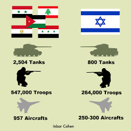

After the 1956 Suez Crisis, Egypt agreed to the stationing of a United Nations Emergency Force (UNEF) in the Sinai to ensure all parties would comply with the 1949 Armistice Agreements. In the following years there were numerous minor border clashes between Israel and its Arab neighbours, particularly Syria. In early November 1966, Syria signed a mutual defence agreement with Egypt. Soon after this, in response to Palestine Liberation Organisation (PLO) guerilla activity, including a mine attack that left three dead, the Israeli Defence Force (IDF) attacked the village of as-Samu in the Jordanian-ruled West Bank. Jordanian units that engaged the Israelis were quickly beaten back. King Hussein of Jordan criticized Egyptian President Gamal Abdel Nasser for failing to come to Jordan's aid, and "hiding behind UNEF skirts".
In May 1967, Nasser received false reports from the Soviet Union that Israel was massing on the Syrian border. Nasser began massing his troops in two defensive lines in the Sinai Peninsula on Israel's border (16 May), expelled the UNEF force from Gaza and Sinai (19 May) and took over UNEF positions at Sharm el-Sheikh, overlooking the Straits of Tiran. Israel repeated declarations it had made in 1957 that any closure of the Straits would be considered an act of war, or justification for war, but Nasser closed the Straits to Israeli shipping on 22–23 May. After the war, U.S. President Lyndon Johnson commented:
If a single act of folly was more responsible for this explosion than any other, it was the arbitrary and dangerous announced decision that the Straits of Tiran would be closed. The right of innocent, maritime passage must be preserved for all nations.
On 30 May, Jordan and Egypt signed a defence pact. The following day, at Jordan's invitation, the Iraqi army began deploying troops and armoured units in Jordan. They were later reinforced by an Egyptian contingent. On 1 June, Israel formed a National Unity Government by widening its cabinet, and on 4 June the decision was made to go to war. The next morning, Israel launched Operation Focus, a large-scale, surprise air strike that launched the Six-Day War.
Armies

The Israeli army had a total strength, including reservists, of 264,000, though this number could not be sustained during a long conflict, as the reservists were vital to civilian life.
Against Jordan's forces on the West Bank, Israel deployed about 40,000 troops and 200 tanks (eight brigades). Israeli Central Command forces consisted of five brigades. The first two were permanently stationed near Jerusalem and were the Jerusalem Brigade and the mechanized Harel Brigade. Mordechai Gur's 55th Paratroopers Brigade was summoned from the Sinai front. The 10th Armored Brigade was stationed north of the West Bank. The Israeli Northern Command comprised a division of three brigades led by Major General Elad Peled which was stationed in the Jezreel Valley to the north of the West Bank.
On the eve of the war, Egypt massed approximately 100,000 of its 160,000 troops in the Sinai, including all seven of its divisions (four infantry, two armoured and one mechanized), four independent infantry brigades and four independent armoured brigades. Over a third of these soldiers were veterans of Egypt's continuing intervention into the North Yemen Civil War and another third were reservists. These forces had 950 tanks, 1,100 APCs, and more than 1,000 artillery pieces.
Syria's army had a total strength of 75,000 and was deployed along the border with Israel. Professor David W. Lesch wrote that "One would be hard-pressed to find a military less prepared for war with a clearly superior foe" since Syria's army had been decimated in the months and years prior through coups and attempted coups that had resulted in a series of purges, fracturings and uprisings within the armed forces.
The Jordanian Armed Forces included 11 brigades, totalling 55,000 troops. Nine brigades (45,000 troops, 270 tanks, 200 artillery pieces) were deployed in the West Bank, including the elite armoured 40th, and two in the Jordan Valley. They possessed sizable numbers of M113 APCs and were equipped with some 300 modern Western tanks, 250 of which were U.S. M48 Pattons. They also had 12 battalions of artillery, six batteries of 81 mm and 120 mm mortars, a paratrooper battalion trained in the new U.S.-built school and a new battalion of mechanized infantry. The Jordanian Army was a long-term-service, professional army, relatively well-equipped and well-trained. Israeli post-war briefings said that the Jordanian staff acted professionally, but was always left "half a step" behind by the Israeli moves. The small Royal Jordanian Air Force consisted of only 24 British-made Hawker Hunter fighters, six transport aircraft and two helicopters. According to the Israelis, the Hawker Hunter was essentially on par with the French-built Dassault Mirage III – the IAF's best plane.
One hundred Iraqi tanks and an infantry division were readied near the Jordanian border. Two squadrons of Iraqi fighter-aircraft, Hawker Hunters and MiG 21s, were rebased adjacent to the Jordanian border.
In the weeks leading up to the Six-Day War, Saudi Arabia mobilized forces for deployment to the Jordanian front. A Saudi infantry battalion entered Jordan on the 6th of June 1967, followed by another on the 8th. Both were based in Jordan's southernmost city, Ma'an. By the 17th of June, the Saudi contingent in Jordan had grown to include a single infantry brigade, a tank company, two artillery batteries, a heavy mortar company, and a maintenance and support unit. By the end of July 1967, a second tank company and a third artillery battery had been added. These forces remained in Jordan until the end of 1977, when they were recalled for re-equipment and retraining in the Karak region near the Dead Sea.
The Arab air forces were reinforced by aircraft from Libya, Algeria, Morocco, Kuwait, and Saudi Arabia to make up for the massive losses suffered on the first day of the war. They were also aided by volunteer pilots from the Pakistan Air Force acting in an independent capacity. PAF pilots like Saiful Azam shot down several Israeli planes.
Fighting fronts
Air Attack
The first and most critical move of the conflict was a surprise Israeli attack on the Egyptian Air Force. Initially, both Egypt and Israel announced that they had been attacked by the other country.
On 5 June at 7:45 Israeli time, as civil defence sirens sounded all over Israel, the IAF launched Operation Focus (Moked). All but 12 of its nearly 200 operational jets launched a mass attack against Egypt's airfields. The Egyptian defensive infrastructure was extremely poor, and no airfields were yet equipped with hardened aircraft shelters capable of protecting Egypt's warplanes. Most of the Israeli warplanes headed out over the Mediterranean Sea, flying low to avoid radar detection, before turning toward Egypt. Others flew over the Red Sea.
Meanwhile, the Egyptians hindered their own defence by effectively shutting down their entire air defence system: they were worried that rebel Egyptian forces would shoot down the plane carrying Field Marshal Abdel Hakim Amer and Lt-Gen. Sidqi Mahmoud, who were en route from al Maza to Bir Tamada in the Sinai to meet the commanders of the troops stationed there. In any event, it did not make a great deal of difference as the Israeli pilots came in below Egyptian radar cover and well below the lowest point at which its SA-2 surface-to-air missile batteries could bring down an aircraft.
Although the powerful Jordanian radar facility at Ajloun detected waves of aircraft approaching Egypt and reported the code word for "war" up the Egyptian command chain, Egyptian command and communications problems prevented the warning from reaching the targeted airfields. The Israelis employed a mixed-attack strategy: bombing and strafing runs against planes parked on the ground, and bombing to disable runways with special tarmac-shredding penetration bombs developed jointly with France, leaving surviving aircraft unable to take off. The runway at the Arish airfield was spared, as the Israelis expected to turn it into a military airport for their transports after the war. Surviving aircraft were taken out by later attack waves. The operation was more successful than expected, catching the Egyptians by surprise and destroying virtually all of the Egyptian Air Force on the ground, with few Israeli losses. Only four unarmed Egyptian training flights were in the air when the strike began. A total of 338 Egyptian aircraft were destroyed and 100 pilots were killed, although the number of aircraft lost by the Egyptians is disputed.
Among the Egyptian planes lost were all 30 Tu-16 bombers, 27 out of 40 Il-28 bombers, 12 Su-7 fighter-bombers, over 90 MiG-21s, 20 MiG-19s, 25 MiG-17 fighters, and around 32 assorted transport planes and helicopters. In addition, Egyptian radars and SAM missiles were also attacked and destroyed. The Israelis lost 19 planes, including two destroyed in air-to-air combat and 13 downed by anti-aircraft artillery. One Israeli plane, which was damaged and unable to break radio silence, was shot down by Israeli Hawk missiles after it strayed over the Negev Nuclear Research Center. Another was destroyed by an exploding Egyptian bomber.
The attack guaranteed Israeli air supremacy for the rest of the war. Attacks on other Arab air forces by Israel took place later in the day as hostilities broke out on other fronts.
The large numbers of Arab aircraft claimed destroyed by Israel on that day were at first regarded as "greatly exaggerated" by the Western press. However, the fact that the Egyptian Air Force, along with other Arab air forces attacked by Israel, made practically no appearance for the remaining days of the conflict proved that the numbers were most likely authentic. Throughout the war, Israeli aircraft continued strafing Arab airfield runways to prevent their return to usability. Meanwhile, Egyptian state-run radio had reported an Egyptian victory, falsely claiming that 70 Israeli planes had been downed on the first day of fighting.
Gaza Strip and Sinai Peninsula
The Egyptian forces consisted of seven divisions: four armoured, two infantry, and one mechanized infantry. Overall, Egypt had around 100,000 troops and 900–950 tanks in the Sinai, backed by 1,100 APCs and 1,000 artillery pieces. This arrangement was thought to be based on the Soviet doctrine, where mobile armour units at strategic depth provide a dynamic defense while infantry units engage in defensive battles.
Israeli forces concentrated on the border with Egypt included six armoured brigades, one infantry brigade, one mechanized infantry brigade, three paratrooper brigades, giving a total of around 70,000 men and 700 tanks, who were organized in three armoured divisions. They had massed on the border the night before the war, camouflaging themselves and observing radio silence before being ordered to advance.
The Israeli plan was to surprise the Egyptian forces in both timings (the attack exactly coinciding with the IAF strike on Egyptian airfields), location (attacking via northern and central Sinai routes, as opposed to the Egyptian expectations of a repeat of the 1956 war, when the IDF attacked via the central and southern routes) and method (using a combined-force flanking approach, rather than direct tank assaults).
Northern Israeli division
On 5 June, at 7:50 am, the northernmost Israeli division, consisting of three brigades and commanded by Major General Israel Tal, one of Israel's most prominent armour commanders, crossed the border at two points, opposite Nahal Oz and south of Khan Yunis. They advanced swiftly, holding fire to prolong the element of surprise. Tal's forces assaulted the "Rafah Gap", a seven-mile stretch containing the shortest of three main routes through the Sinai towards El Qantara and the Suez Canal. The Egyptians had four divisions in the area, backed by minefields, pillboxes, underground bunkers, hidden gun emplacements and trenches. The terrain on either side of the route was impassable. The Israeli plan was to hit the Egyptians at selected key points with concentrated armour.
Tal's advance was led by the 7th Armored Brigade under Colonel Shmuel Gonen. The Israeli plan called for the 7th Brigade to outflank Khan Yunis from the north and the 60th Armored Brigade under Colonel Menachem Aviram would advance from the south. The two brigades would link up and surround Khan Yunis, while the paratroopers would take Rafah. Gonen entrusted the breakthrough to a single battalion of his brigade.
Initially, the advance was met with light resistance, as Egyptian intelligence had concluded that it was a diversion for the main attack. However, as Gonen's lead battalion advanced, it suddenly came under intense fire and took heavy losses. A second battalion was brought up, but was also pinned down. Meanwhile, the 60th Brigade became bogged down in the sand, while the paratroopers had trouble navigating through the dunes. The Israelis continued to press their attack, and despite heavy losses, cleared the Egyptian positions and reached the Khan Yunis railway junction in a little over four hours.
Gonen's brigade then advanced nine miles to Rafah in twin columns. Rafah itself was circumvented, and the Israelis attacked Sheikh Zuweid, eight miles to the southwest, which was defended by two brigades. Though inferior in numbers and equipment, the Egyptians were deeply entrenched and camouflaged. The Israelis were pinned down by fierce Egyptian resistance and called in air and artillery support to enable their lead elements to advance. Many Egyptians abandoned their positions after their commander and several of his staff were killed.
The Israelis broke through with tank-led assaults. However, Aviram's forces misjudged the Egyptians' flank and were pinned between strongholds before they were extracted after several hours. By nightfall, the Israelis had finished mopping up resistance. Israeli forces had taken significant losses, with Colonel Gonen later telling reporters that "we left many of our dead soldiers in Rafah and many burnt-out tanks." The Egyptians suffered some 2,000 casualties and lost 40 tanks.